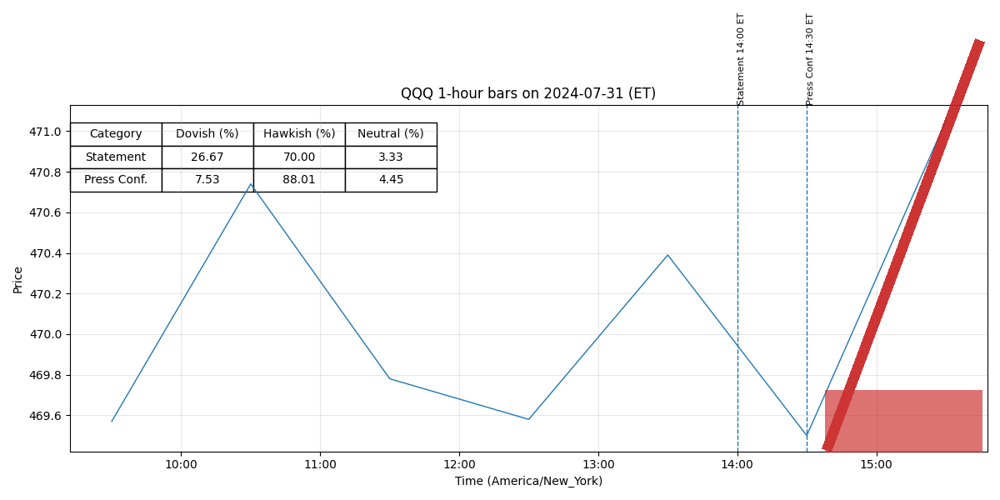

For release at 2:00 p.m. EDT September 18, 2024 Recent indicators suggest that economic activity has continued to expand at a solid pace.
Job gains have slowed, and the unemployment rate has moved up but remains low.
Inflation has made further progress toward the Committee’s 2 percent objective but remains somewhat elevated.
The Committee has gained greater confidence that inflation is moving sustainably toward 2 percent, and judges that the risks to achieving its employment and inflation goals are roughly in balance.
The economic outlook is uncertain, and the Committee is attentive to the risks to both sides of its dual mandate.
In light of the progress on inflation and the balance of risks, the Committee decided to lower the target range for the federal funds rate by 1/2 percentage point to 4-3/4 to 5 percent.
In considering additional adjustments to the target range for the federal funds rate, the Committee will carefully assess incoming data, the evolving outlook, and the balance of risks.
The Committee will continue reducing its holdings of Treasury securities and agency debt and agency mortgage‑backed securities.
The Committee is strongly committed to supporting maximum employment and returning inflation to its 2 percent objective.
The Committee would be prepared to adjust the stance of monetary policy as appropriate if risks emerge that (more) -2- could impede the attainment of the Committee’s goals.
Voting for the monetary policy action were Jerome H. Powell, Chair; John C. Williams, Vice Chair; Thomas I. Barkin; Michael S. Barr; Raphael W. Bostic; Lisa D. Cook; Mary C. Daly; Beth M. Hammack; Philip N. Jefferson; Adriana D. Kugler; and Christopher J. Waller.
Voting against this action was Michelle W. Bowman, who preferred to lower the target range for the federal funds rate by 1/4 percentage point at this meeting.
For release at 2:00 p.m. EDT September 18, 2024 Decisions Regarding Monetary Policy Implementation The Federal Reserve has made the following decisions to implement the monetary policy stance announced by the Federal Open Market Committee in its statement on September 18, 2024: • The Board of Governors of the Federal Reserve System voted unanimously to lower the interest rate paid on reserve balances to 4.9 percent, effective September 19, 2024.
• As part of its policy decision, the Federal Open Market Committee voted to direct the Open Market Desk at the Federal Reserve Bank of New York, until instructed otherwise, to execute transactions in the System Open Market Account in accordance with the following domestic policy directive: "Effective September 19, 2024, the Federal Open Market Committee directs the Desk to:
o Conduct standing overnight repurchase agreement operations with a minimum bid rate of 5 percent and with an aggregate operation limit of $500 billion.
o Conduct standing overnight reverse repurchase agreement operations at an offering rate of 4.8 percent and with a per-counterparty limit of $160 billion per day.
• In a related action, the Board of Governors of the Federal Reserve System voted unanimously to approve a 1/2 percentage point decrease in the primary credit rate to 5 percent, effective September 19, 2024.
In taking this action, the Board approved requests to establish that rate submitted by the Board of Directors of the Federal Reserve Bank of Atlanta.
(more) -2- This information will be updated as appropriate to reflect decisions of the Federal Open Market Committee or the Board of Governors regarding details of the Federal Reserve's operational tools and approach used to implement monetary policy.
For release at 2:00 p.m. EDT July 31, 2024
Recent indicators suggest that economic activity has continued to expand at a solid pace.
Job gains have moderated, and the unemployment rate has moved up but remains low.
Inflation
has eased over the past year but remains somewhat elevated.
In recent months, there has been
some further progress toward the Committee’s 2 percent inflation objective.
The Committee judges that the risks to achieving its employment
and inflation goals continue to move into better balance.
The economic outlook is uncertain, and
the Committee is attentive to the risks to both sides of its dual mandate.
In support of its goals, the Committee decided to maintain the target range for the federal
funds rate at 5-1/4 to 5-1/2 percent.
In considering any adjustments to the target range for the
federal funds rate, the Committee will carefully assess incoming data, the evolving outlook, and
the balance of risks.
The Committee does not expect it will be appropriate to reduce the target
range until it has gained greater confidence that inflation is moving sustainably toward 2 percent.
In addition, the Committee will continue reducing its holdings of Treasury securities and agency
debt and agency mortgage‑backed securities.
The Committee is strongly committed to returning
inflation to its 2 percent objective.
The Committee
would be prepared to adjust the stance of monetary policy as appropriate if risks emerge that
(more)
-2-
could impede the attainment of the Committee’s goals.
Voting for the monetary policy action were Jerome H. Powell, Chair; John C. Williams,
Vice Chair; Thomas I. Barkin; Michael S. Barr; Raphael W. Bostic; Michelle W. Bowman; Lisa
D. Cook; Mary C. Daly; Austan D. Goolsbee; Philip N. Jefferson; Adriana D. Kugler; and
Christopher J. Waller.
Austan D. Goolsbee voted as an alternate member at this meeting.
For release at 2:00 p.m. EDT July 31, 2024
Decisions Regarding Monetary Policy Implementation
The Federal Reserve has made the following decisions to implement the monetary policy
stance announced by the Federal Open Market Committee in its statement on July 31, 2024:
• The Board of Governors of the Federal Reserve System voted unanimously to maintain the
interest rate paid on reserve balances at 5.4 percent, effective August 1, 2024.
• As part of its policy decision, the Federal Open Market Committee voted to direct the Open
Market Desk at the Federal Reserve Bank of New York, until instructed otherwise, to
execute transactions in the System Open Market Account in accordance with the following
domestic policy directive:
"Effective August 1, 2024, the Federal Open Market Committee directs the Desk to:
o Conduct standing overnight repurchase agreement operations with a minimum bid
rate of 5.5 percent and with an aggregate operation limit of $500 billion.
o Conduct standing overnight reverse repurchase agreement operations at an
offering rate of 5.3 percent and with a per-counterparty limit of $160 billion per
day.
• In a related action, the Board of Governors of the Federal Reserve System voted
unanimously to approve the establishment of the primary credit rate at the existing level
of 5.5 percent.
(more)
-2-
This information will be updated as appropriate to reflect decisions of the Federal Open Market
Committee or the Board of Governors regarding details of the Federal Reserve's operational tools
and approach used to implement monetary policy.
The Committee seeks to achieve maximum employment and inflation at the rate of 2 percent over the longer run.
In assessing the appropriate stance of monetary policy, the Committee will continue to monitor the implications of incoming information for the economic outlook.
The Committee’s assessments will take into account a wide range of information, including readings on labor market conditions, inflation pressures and inflation expectations, and financial and international developments.
-0- Attachment For media inquiries, please email media@frb.gov or call 202-452-2955.
o Roll over at auction the amount of principal payments from the Federal Reserve's holdings of Treasury securities maturing in each calendar month that exceeds a cap of $25 billion per month.
Redeem Treasury coupon securities up to this monthly cap and Treasury bills to the extent that coupon principal payments are less than the monthly cap.
o Reinvest the amount of principal payments from the Federal Reserve's holdings of agency debt and agency mortgage-backed securities (MBS) received in each calendar month that exceeds a cap of $35 billion per month into Treasury securities to roughly match the maturity composition of Treasury securities outstanding.
o Allow modest deviations from stated amounts for reinvestments, if needed for operational reasons.
o Engage in dollar roll and coupon swap transactions as necessary to facilitate settlement of the Federal Reserve's agency MBS transactions.""
More information regarding open market operations and reinvestments may be found on the Federal Reserve Bank of New York's website.